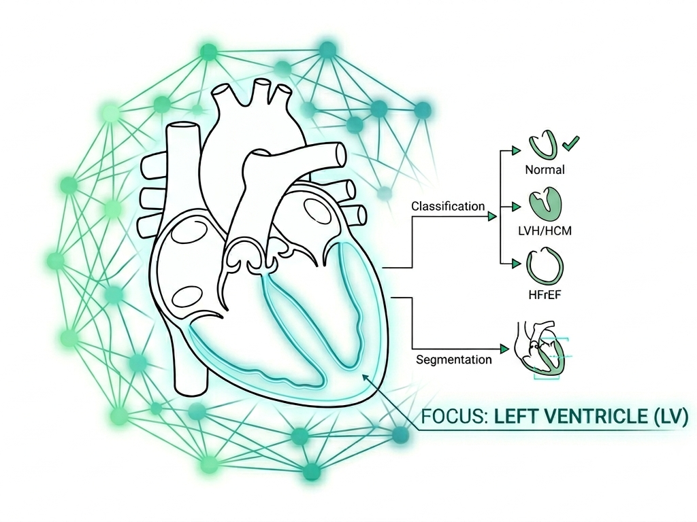

LV-DeepSeg
01 / 24

Master's Thesis Defense — 2026
A Combined Deep Learning Pipeline for Fully Automatic Classification and Segmentation of the Left Ventricle in Echocardiography
Aboubakr Belkaïd University – Tlemcen – Faculty of Technology
Specialty: Biomedical & Hospital Informatics
Students
Hadj-bouziane Fethellah
Biomedical & Hospital Informatics
Kertali Sohaib
Biomedical & Hospital Informatics
Jury Members
Mr. Boukli Hacene Ismail
President
Mss. Belarouci Sara
Examinator
Mr. Gaouar Adil
Supervisor
Mr. Meziane Abdelfettah
Co-Supervisor
Aboubakr Belkaïd University – Tlemcen / Faculty of Technology
LV-DeepSeg
02 / 24
Outline
Roadmap
01
Medical Context & Motivation
02
Literature Review & Architectures
03
Datasets & Methodology
04
Results: Classification Performance
05
Statistical Validation & Explainability
06
Results: Segmentation Frameworks
07
Conclusion & Application (LV-DeepSeg)
Aboubakr Belkaïd University – Tlemcen / Faculty of Technology
LV-DeepSeg
03 / 24
Background
Problem Statement & Motivation
Clinical Reality: Cardiovascular diseases remain the leading cause of global mortality — yet analysis is still largely manual, slow, and operator-dependent.
Current echocardiographic analysis is:
- Time-consuming — manual frame-by-frame review
- Operator-dependent — trained specialist required
- Prone to variability — significant inter-observer disagreement
- Not scalable — limited availability in resource-constrained settings
Objective
Develop a fully automated, robust pipeline capable of:
- Classifying cardiac pathologies
- Precisely segmenting the Left Ventricle (LV)
- Operating without human intervention
Aboubakr Belkaïd University – Tlemcen / Faculty of Technology
LV-DeepSeg
04 / 24
Anatomy
Anatomy of the Heart
The left ventricle (LV) is the primary pump of the systemic circulation.
- LVEF — Left Ventricular Ejection Fraction
- EDV — End-Diastolic Volume
- ESV — End-Systolic Volume
- Myocardial wall thickness — key structural index
LV assessment is the most clinically vital aspect of echocardiography — it is the most vulnerable chamber to structural disease.
🫀
Placeholder: Heart Anatomy Diagram (A4C View)
Annotated 4-chamber cross-section showing LV, RV, LA, RA
Aboubakr Belkaïd University – Tlemcen / Faculty of Technology
LV-DeepSeg
05 / 24
Pathologies
Left Ventricle Pathologies
Class A
Normal LV
Reference standard for function and geometry. Used as baseline for pathological comparison in all classification tasks.
EF ≥ 55%IVSd ≤ 1.1 cm
Class B
LVH / HCM
Pathological wall thickening. Hypertrophic cardiomyopathy with significant septal remodelling and diastolic dysfunction.
IVSd > 1.1 cm
Class C
HFrEF
Heart Failure with reduced Ejection Fraction. Dilated cavity with severe systolic impairment and wall motion abnormalities.
EF < 40%
Clinical challenge: These conditions present distinct morphometric signatures but exhibit clinically overlapping features — making automated discrimination especially valuable.
Aboubakr Belkaïd University – Tlemcen / Faculty of Technology
LV-DeepSeg
06 / 24
Imaging Modality
Echocardiography Explained
A non-invasive, radiation-free, and real-time cardiac imaging modality.
- Non-invasive — no radiation exposure, safe for all patients
- Standardized views — Apical 4-chamber (A4C) and Parasternal Long-Axis (PLAX) are clinical gold standards
- Real-time imaging — dynamic assessment of wall motion
Technical Barriers
- Speckle noise and acoustic shadowing
- Signal quality dependency on patient body habitus
- Operator expertise requirement
🔊
Placeholder: Echocardiogram Sample Frames
A4C view at ED and ES frames with visible LV boundaries
Aboubakr Belkaïd University – Tlemcen / Faculty of Technology
LV-DeepSeg
07 / 24
System Overview
Project Overview: LV-DeepSeg
Echo Input
→
Preprocessing
→
UNet++ Segmentation
→
Multi-backbone Classification
→
Metrics Extraction
→
Report Generation
Scope
Integrated segmentation of LV cavity + wall and classification of Normal / HFrEF / LVH-HCM.
Innovation
End-to-end framework trained from scratch, utilizing 3 public datasets and a validated CHU Oran clinical cohort.
Validation
Independent CHU Oran clinical cohort. Ethically authorized January 2026.
Aboubakr Belkaïd University – Tlemcen / Faculty of Technology
LV-DeepSeg
08 / 24
Data Sources
Datasets Used
EchoNet-Dynamic
A4C echocardiography videos with EF labels and LV cavity masks. Primary source for Normal and HFrEF classification.
EchoNet-LVH
Targeted hypertrophic data. LVH/HCM labels defined by IVSd > 1.1 cm threshold.
CAMUS Dataset
2CH / 4CH NIfTI format echocardiograms with LV cavity + wall masks for dual-class segmentation training.
CHU Oran Cohort — Validation
Independent clinical cohort. Ethically authorized January 2026. Real-world deployment benchmark.
Aboubakr Belkaïd University – Tlemcen / Faculty of Technology
LV-DeepSeg
09 / 24
Methodology
Data Preparation & Preprocessing
Frame Selection
ED & ES Extraction
Selective extraction of End-Diastole (ED) and End-Systole (ES) frames — the clinically critical moments for LV measurement.
Standardization
Resolution Normalization
Classification: 224 × 224 px
Segmentation: 384 × 384 px
Background padding removal applied uniformly.
Segmentation: 384 × 384 px
Background padding removal applied uniformly.
Normalization
ImageNet Normalization
Standard mean-variance normalization using ImageNet statistics for pretrained backbone compatibility.
Placeholder: Preprocessing Pipeline Diagram — Raw Frame → Cropped → Resized → Normalized
Aboubakr Belkaïd University – Tlemcen / Faculty of Technology
LV-DeepSeg
10 / 24
Methodology
Data Augmentation Strategy
Spatial Transforms
- Random rotations
- Horizontal & vertical flips
- Perspective warps
Photometric Transforms
- CLAHE contrast enhancement
- Gaussian noise injection
- Speckle noise simulation
Regularization
- Non-rigid elastic deformations
- Grid distortion (image/mask pairs)
- Mixup batch augmentation (λ ~ Beta(0.2, 0.2))
Placeholder: Augmentation Examples Grid — Original | Flipped | Elastic | Speckle | CLAHE
Aboubakr Belkaïd University – Tlemcen / Faculty of Technology
LV-DeepSeg
11 / 24
Methodology
Dataset Balancing & Leakage Prevention
Class Balancing
3,000 Normal samples from EchoNet-Dynamic +
3,000 from EchoNet-LVH to mitigate domain bias.
HFrEF and LVH classes oversampled to fix label imbalance.
3,000 from EchoNet-LVH to mitigate domain bias.
HFrEF and LVH classes oversampled to fix label imbalance.
Data Leakage Prevention
Patient-level stratification using GroupShuffleSplit (70% train / 15% val / 15% test) ensures no patient data leaks between splits.
Placeholder: Class Distribution Bar Chart — Before and After Balancing
Normal | HFrEF | LVH-HCM class counts
Aboubakr Belkaïd University – Tlemcen / Faculty of Technology
LV-DeepSeg
12 / 24
Architecture
Segmentation Architectures Explored
UNet++
Selected
Nested dense skip connections with MiT-B3 encoder
- Closes semantic gap encoder↔decoder
- Global spatial reasoning
- Dual-head output
FPN
Feature Pyramid Network
- Multi-scale feature pyramid
- Strong at variable-scale objects
MANet
Multi-scale Attention Network
- Multi-scale attention fusion
- Attention-guided feature selection
MedSAM
Foundation Model (Frozen Encoder)
- Large-scale pretraining on medical images
- Frozen encoder — prompt-based inference
Aboubakr Belkaïd University – Tlemcen / Faculty of Technology
LV-DeepSeg
13 / 24
Architecture Deep-Dive
Why UNet++ Was Selected
Dense Skip Paths: Closes the semantic gap between encoder and decoder features, enabling fine-grained boundary recovery.
MiT-B3 Encoder: Facilitates global spatial reasoning via Transformer self-attention without training instability.
Dual-Head Output: Simultaneously handles varying LV geometries across adult and paediatric datasets.
Source-Aware Masking: Wall class loss is zeroed for datasets lacking wall labels — prevents spurious gradient updates.
Placeholder: UNet++ Architecture Diagram
Nested dense skip connections from encoder to decoder layers
Aboubakr Belkaïd University – Tlemcen / Faculty of Technology
LV-DeepSeg
14 / 24
Architecture
Classification Architectures Overview
Multi-backbone ensemble strategy — six architectures evaluated for 3-class cardiac pathology classification.
Vision Transformer
Swin-Tiny
Shifted-window self-attention for global long-range feature extraction.
Modernized CNN
ConvNeXt-Small
CNN re-engineered with Transformer design principles.
Residual Baseline
ResNet-50
Deep residual learning with skip connections for stable training.
Compound Scaling
EfficientNet-B4
Balanced depth, width, and resolution scaling for efficiency.
Depth-Oriented
VGG-16
Classical deep CNN baseline with strong XAI compatibility.
Lightweight Custom
Classic-CNN
Lightweight custom architecture designed for echocardiogram-specific features.
Aboubakr Belkaïd University – Tlemcen / Faculty of Technology
LV-DeepSeg
15 / 24
Architecture
Swin-Tiny & Vision Transformers
Self-Attention Mechanism
Enables global understanding of the full image context vs. localized convolutional filters — crucial for capturing long-range wall motion dependencies.
Shifted-Window Approach
Provides linear computational complexity and hierarchical multi-scale feature extraction via non-overlapping windows shifted between layers.
Clinical Relevance
Effectively captures long-range dependencies in wall motion patterns — particularly valuable for differentiating regional hypokinesia in HFrEF.
Placeholder: Swin Transformer Window Partition Diagram
Shifted-window attention mechanism across patch partitions
Aboubakr Belkaïd University – Tlemcen / Faculty of Technology
LV-DeepSeg
16 / 24
Training
Training Configuration & Optimization
Optimizer & Scheduler
AdamW with weight decay.
Linear warmup (5 epochs) + Cosine Annealing for smooth learning rate decay.
Linear warmup (5 epochs) + Cosine Annealing for smooth learning rate decay.
Hardware
RTX 4060 (8 GB VRAM)
Mixed Precision training (FP16/FP32) for memory efficiency and throughput.
Mixed Precision training (FP16/FP32) for memory efficiency and throughput.
Regularization
Early stopping with patience = 20 epochs. Monitors Loss, F1-Macro, and Accuracy simultaneously.
Loss Functions
Classification: Focal Loss with balanced alpha
Segmentation: Hybrid Dice + Cross-Entropy
Masking: Source-aware zero-loss for myocardium
Segmentation: Hybrid Dice + Cross-Entropy
Masking: Source-aware zero-loss for myocardium
Aboubakr Belkaïd University – Tlemcen / Faculty of Technology
LV-DeepSeg
17 / 24
Training
Loss Functions
Classification Loss
Focal Loss
Balanced alpha weights for hard-case focus. Down-weights easy negatives to train on clinically ambiguous cases. Particularly effective for class imbalance in cardiac pathology detection.
Segmentation Loss
Hybrid Dice + CE
Dice loss for overlap maximization, Cross-Entropy for per-pixel classification. Combined loss handles both false-negative and false-positive penalties for LV boundary precision.
Masking Strategy
Source-Aware Zero-Loss
Wall class loss is zeroed for EchoNet samples that lack myocardium annotations, preventing incorrect gradient signals from propagating back through the wall head.
Key innovation: Source-aware masking allows training on heterogeneous datasets with different annotation protocols without architectural changes.
Aboubakr Belkaïd University – Tlemcen / Faculty of Technology
LV-DeepSeg
18 / 24
Results
Classification Results: Metrics Table
| Model | Accuracy | Balanced Acc. | F1-Macro | ROC-AUC |
|---|---|---|---|---|
| Swin-Tiny ★ | 0.9236 | 0.9285 | 0.9295 | 0.9827 |
| ConvNeXt-S | 0.8884 | 0.8907 | 0.8961 | 0.9662 |
| Classic-CNN | 0.8853 | 0.8938 | 0.8937 | 0.9673 |
| ResNet-50 | 0.8760 | 0.8863 | 0.8860 | 0.9670 |
| VGG-16 | 0.8782 | 0.8691 | 0.8741 | 0.9512 |
| EfficientNet-B4 | 0.8533 | 0.8723 | 0.8666 | 0.9525 |
92.4%
Best Accuracy
Swin-Tiny
0.983
Best ROC-AUC
Swin-Tiny
92.9%
Best F1-Macro
Swin-Tiny
6
Models Compared
Full benchmark
Aboubakr Belkaïd University – Tlemcen / Faculty of Technology
LV-DeepSeg
19 / 24
Results
Per-Class Sensitivity Analysis
| Model | Normal Sensitivity | HFrEF Sensitivity | LVH/HCM Sensitivity |
|---|---|---|---|
| Swin-Tiny ★ | 0.9151 | 0.9062 | 0.9643 |
| Classic-CNN | 0.8467 | 0.9063 | 0.9286 |
| ConvNeXt-S | 0.8797 | 0.8906 | 0.9018 |
| ResNet-50 | 0.8467 | 0.8656 | 0.9464 |
| VGG-16 | 0.8341 | 0.8901 | 0.9201 |
| EfficientNet-B4 | 0.7807 | 0.8719 | 0.9643 |
Key insight: LVH/HCM achieves the highest sensitivity across most models — indicating the morphological signature of wall thickening is the most distinctly learnable feature.
Aboubakr Belkaïd University – Tlemcen / Faculty of Technology
LV-DeepSeg
20 / 24
Validation
Confusion Matrices & Statistical Validation
Best Performer
Swin-Tiny
Achieves the highest classification performance across all metrics with consistent per-class sensitivity.
McNemar's Test
Swin-Tiny significantly outperforms all benchmarks, reducing false negatives by up to 48% compared to weaker baselines.
Decision Curve Analysis (DCA)
Swin-Tiny provides maximum net clinical benefit across all probability thresholds — superior clinical utility.
Placeholder: Swin-Tiny Confusion Matrix (3×3)
Placeholder: Decision Curve Analysis Plot
Aboubakr Belkaïd University – Tlemcen / Faculty of Technology
LV-DeepSeg
21 / 24
Explainability — XAI
Explainability (XAI)
Grad-CAM++ on VGG-16
Effective localization of endocardial borders — activation maps concentrate on myocardial boundary regions consistent with clinical annotation practice.
Attention Rollout on Swin-Tiny
Precise tracking of LV cavity boundaries across attention layers — global attention aggregated via rollout provides interpretable spatial focus maps.
Conclusion: Architecture-aware XAI is essential for clinical reliability — preventing attention on non-cardiac artifacts that may inflate accuracy.
Placeholder: Grad-CAM++ Heatmap Overlay (VGG-16)
Placeholder: Attention Rollout Map (Swin-Tiny)
Aboubakr Belkaïd University – Tlemcen / Faculty of Technology
LV-DeepSeg
22 / 24
Results
Segmentation Results (UNet++)
0.9111
Dice (Foreground)
Combined LV
0.9439
LV Cavity Dice
Inner boundary
0.8784
LV Wall Dice
Myocardium
0.9746
Pixel Accuracy
All classes
0.8937
IoU — Cavity
Intersection over Union
0.7832
IoU — Wall
Intersection over Union
Placeholder: UNet++ Segmentation Output — Input Echo | Predicted Mask | Ground Truth Overlay
Aboubakr Belkaïd University – Tlemcen / Faculty of Technology
LV-DeepSeg
23 / 24
Results
Comparison of Segmentation Architectures
| Framework | Dice (Foreground) | Dice (LV Cavity) | Dice (LV Wall) | Status |
|---|---|---|---|---|
| UNet++ (MiT-B3) ★ | 0.9111 | 0.9439 | 0.8784 | Selected |
| FPN | 0.9098 | 0.9427 | 0.8769 | Runner-up |
| MANet | 0.8782 | 0.9251 | 0.8313 | Evaluated |
| MedSAM | 0.2623 | 0.5243 | 0.0002 | Failed |
MedSAM note: Foundation model with frozen encoder catastrophically failed on LV wall segmentation (Dice ≈ 0) — confirming that domain-specific fine-tuning is critical for echocardiographic tasks.
Aboubakr Belkaïd University – Tlemcen / Faculty of Technology
LV-DeepSeg
24 / 24
Conclusion
Conclusion & LV-DeepSeg Application
✓ Classification Pipeline
Swin-Tiny achieves 92.4% accuracy and 0.983 AUC for 3-class LV pathology identification. Statistically validated with McNemar's test and DCA.
✓ Segmentation Pipeline
UNet++ with MiT-B3 achieves Dice 0.944 (cavity) and 0.878 (wall). Source-aware masking enables multi-dataset training without annotation conflicts.
LV-DeepSeg Application
Multi-format support (AVI, DICOM). Confidence-scored diagnostics. Automated PDF report export. Designed for non-expert clinical staff in cardiac triage.
Clinical Impact
Fully automated tool validated on real-world CHU Oran cohort (Jan 2026). Reduces manual workload while maintaining clinical-grade diagnostic reliability.
Placeholder: LV-DeepSeg Application Interface Screenshot
Future Work
3D volume estimation · Longitudinal tracking · Mobile deployment
Aboubakr Belkaïd University – Tlemcen / Faculty of Technology